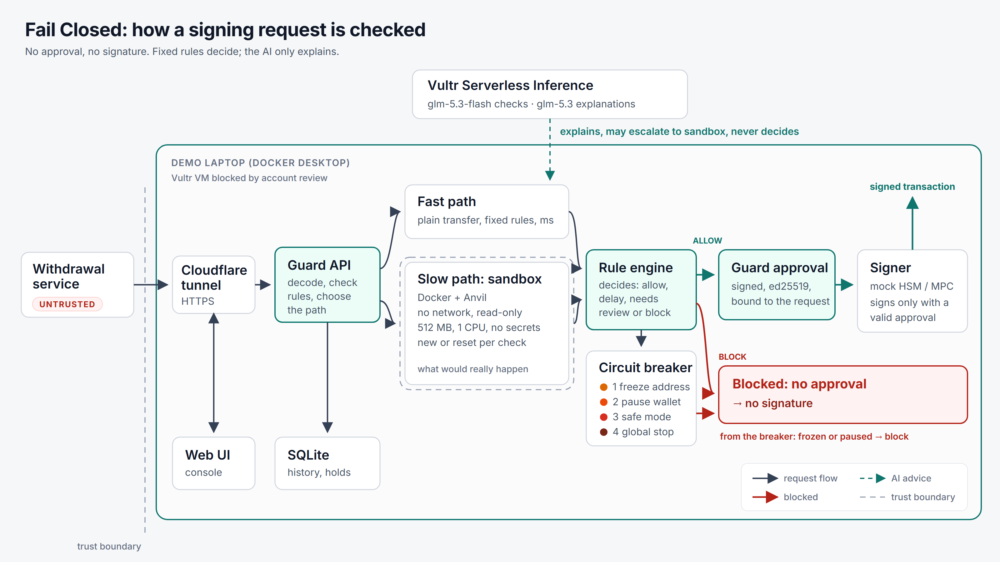
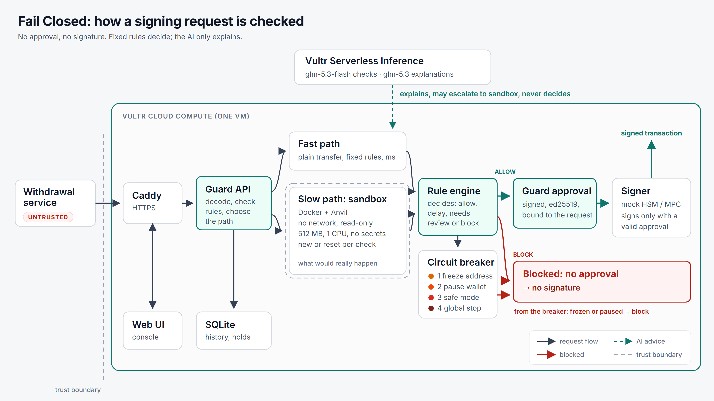

An independent co-signer for crypto wallets. Unusual withdrawals run in an isolated sandbox before anything is signed.
Built on Vultr Serverless Inference + Cloud Compute
AI on Vultr Serverless Inference · the demo runs on a laptop (the Vultr VM was blocked by account review)
Vultr Agent Rush · Challenge 1: Blast Radius Zero · November 20261
The problem
Two real attacks. Valid signatures, wrong withdrawals.
Binance · 29 Oct 2026
Hot wallet delegation drain (EIP-7702)
About $6.3 billion left hot wallets on about 10 chains.
One Ethereum transaction carried 50 EIP-7702 authorizations for 50 consecutive nonces; one matched and handed the wallet to the attacker's contract (Blockaid).
Binance says it found no evidence of a private key leak; the investigation is ongoing.
Mercado Bitcoin · 2 Nov 2026
Multi-chain hot wallet drain
About $38–49M (estimates vary), in plain signed transfers.
Attacker addresses on at least 10 chains; hundreds of tokens (about 185 on Ethereum alone).
How the attacker got in has not been made public.
Fail Closed is designed to reject this class of attack. We do not claim it would have stopped these incidents.
2
The cost nobody counts
After the attack, everyone waits.
Both exchanges paused withdrawals for all customers.
Honest customers pay for the attack too: their money is stuck.
A full stop is the only tool when nothing narrower exists.
A guard should stop the attacker, not the business.
Fail Closed is designed to reject this class of attack. We do not claim it would have stopped these incidents.
3
The idea
Check what a signature will do, not who asks.
An independent co-signer. The signer signs only with a Guard approval for that exact request.
Unusual requests run first in an isolated sandbox: no network, no secrets, fake funds.
Fixed rules decide. The AI explains in plain words. It may ask for a deeper check, never decides.
Fail closed. Any error, timeout or empty result: no approval, no signature.
4
How it works


5
Where Fail Closed fits
The enforcement point exists. Fail Closed is a prototype of the decision logic.
Screening before signing
Threat intelligence and pre-signing checks already exist as products: Blockaid Cosigner, Hypernative Transaction Guard.
Signer hooks
DFNS Validation Gate, Fireblocks API Co-signer Callback Handler, Fordefi Custom API Approver give the enforcement point. The customer writes the decision logic.
Fail Closed
A prototype of that decision logic: fixed rules decide, unusual requests run in an isolated sandbox, every failure fails closed, a scoped circuit breaker, the AI only explains.
Built in this prototype
Fixed rules decide; the AI explains and may ask for a deeper check
Isolated sandbox: state diff and a delegation probe
Fails closed on every error, timeout or empty result
Scoped circuit breaker: address, wallet, chain, global
Approval bound to the request hash; the signer checks it
6
Demo 1 · Hot wallet delegation drain
Blocked. Nothing was signed.
The sandbox shows the wallet would be handed to an unknown contract.
A test call as the attacker moves 100 ETH out (fake funds, in the sandbox).
No approval, so the signer refuses. The wallet is paused.
The AI (Vultr glm-5.3) explains afterwards, in plain words: "This is a classic pattern for handing over control of a hot wallet, not an ordinary withdrawal." It did not decide.
7
Demo 2 · Coordinated attack
The risk level climbs 0 → 4, one narrow step at a time.
Before: level 0, Normal
After the attack: level 4, Global stop
Level 1 freezes one address.
Level 2 pauses one wallet.
Level 3: one chain in safe mode.
Customers outside the stopped scope keep being paid until level 4.
Level 4 needs two independent signals. Only an operator lifts it, with the admin token.
8
Measured results
500 normal withdrawals + 1 hidden attack
Attack stopped
yes, in all 4 setups
Normal customers refused
0 of 500
Fast path (plain payout to a known customer)
3 ms median (warm setup)
Slow path (full sandbox check)
1.3 s median (warm) · 2.4 s (fresh)
Same check with the real Vultr model (49 + 1)
attack stopped · 0 refused · 0 rate limits
Red team: hostile code inside the sandbox
7 of 7 contained
Measured on a laptop (Windows 11, 16 CPUs, Docker Desktop), 6 Nov 2026.
Rows 1–4: backend/cli.py loadtest, mock AI (800 ms per call), file docs/results/loadtest-20261106-111314.md.
Row 5: real Vultr glm-5.3-flash + glm-5.3, file docs/results/live/loadtest-20261106-111340.md.
Row 6: backend/cli.py redteam, file docs/results/redteam-20261106.txt.
Not yet measured on the Vultr VM.The Vultr VM was blocked by account review, so all numbers are from the laptop.
9
Business value
Protect the wallets without stopping normal customers.
Everyday payouts to known customers are approved in milliseconds.
New destinations and unusual requests get a full simulation first, in about 1–3 seconds.
Large or odd payouts go to a person, not to a blanket stop.
The breaker stops as little as possible: address, then wallet, then chain.
In our load test: 0 of 500 normal customers refused (laptop, mock AI, 6 Nov 2026).
10
Honest limits · What's next
Honest limits
A hackathon prototype: local test chain, fake funds.
It does not stop the first break-in. It stops the break-in from getting a signature.
If an attacker takes over the Guard or its key, the protection is gone: run it separately.
Numbers so far come from a laptop, not yet from the VM.
The Vultr VM was blocked by account review, so the demo and all numbers are from a laptop.
What's next
Plug into one real signer hook (e.g. an MPC or HSM co-signer callback).
Check every signature against an approved withdrawal in the exchange ledger, from a separate trust domain.
Deny unknown operation types on withdrawal wallets (e.g. EIP-7702 delegation).
Rules for deposit-address sweeps.
A pre-approved path to revoke a bad EIP-7702 delegation that the breaker never blocks.
Agent-written checks: the AI writes a read-only sandbox script that proves its explanation. Evidence only; the rules decide.